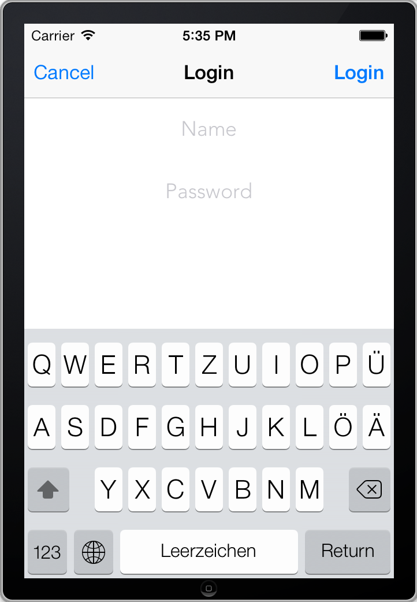

Because creation of blogposts needs authentication, the user of the iOS app will be able to login.
If the creation of a blogpost fails due authentication issues we will present a LoginViewController.
As well as for the blogposts we need a representation of the user model. Create a new class named User:
User.h:
#import <Foundation/Foundation.h>
#import <RestKit/RestKit.h>
@interface User : NSObject
@property (nonatomic, copy) NSString* name;
@property (nonatomic, copy) NSString* password;
+ (RKObjectMapping*)mapping;
@end
User.m:
#import "User.h"
@implementation User
+(RKObjectMapping *)mapping {
RKObjectMapping* mapping = [RKObjectMapping mappingForClass:[User class]];
[mapping addAttributeMappingsFromDictionary:@{
@"name": @"name",
@"password": @"password"
}];
return mapping;
}
@end
For the login endpoint we create request and response descriptors like the one we created for the blogposts endpoint:
RKRequestDescriptor* loginRequest = [RKRequestDescriptor requestDescriptorWithMapping:[[User mapping] inverseMapping]
objectClass:[User class]
rootKeyPath:nil
method:RKRequestMethodPOST];
RKObjectMapping * emptyMapping = [RKObjectMapping mappingForClass:[NSObject class]];
RKResponseDescriptor* loginResponse = [RKResponseDescriptor responseDescriptorWithMapping:emptyMapping
method:RKRequestMethodPOST
pathPattern:@"/users/login"
keyPath:nil
statusCodes:statusCodes];
[manager addResponseDescriptorsFromArray:@[blogPostGetResponse, blogPostPostResponse, loginResponse]];
[manager addRequestDescriptorsFromArray:@[blogPostPostRequest, loginRequest]];
In contrast to the other response descriptors we use an empty mapping for the login response. The returned status code is sufficient to see if the login succeeded or not, so we can ignore the response body.
For the login we present a view which contains:
- an UITextField for the name
- an UITextField for the password
- an UILabel to show errors
This is the interface of the view:
#import <UIKit/UIKit.h>
@interface LoginView : UIView
@property (nonatomic, strong) UITextField* name;
@property (nonatomic, strong) UITextField* password;
@property (nonatomic, strong) UILabel* errorLabel;
-(void)showError:(NSString*)error;
@end
Here you find a possible implementation for the view.
LoginViewController.h:
#import <UIKit/UIKit.h>
@protocol LoginViewControllerDelegate;
@interface LoginViewController : UIViewController
@property (nonatomic, weak)id<LoginViewControllerDelegate> delegate;
@end
@protocol LoginViewControllerDelegate <NSObject>
-(void)loginViewController:(LoginViewController*)loginViewController didFinishWithLogin:(BOOL)loggedIn;
@end
LoginViewController.m:
#import <RestKit/RestKit.h>
#import "LoginViewController.h"
#import "LoginView.h"
#import "User.h"
@interface LoginViewController ()
- (void)cancel:(id)sender;
- (void)login:(id)sender;
@end
@implementation LoginViewController
- (id)initWithNibName:(NSString *)nibNameOrNil bundle:(NSBundle *)nibBundleOrNil
{
self = [super initWithNibName:nibNameOrNil bundle:nibBundleOrNil];
if (self) {
self.navigationItem.title = @"Login";
self.navigationItem.leftBarButtonItem = [[UIBarButtonItem alloc] initWithTitle:@"Cancel"
style:UIBarButtonItemStylePlain
target:self
action:@selector(cancel:)];
self.navigationItem.rightBarButtonItem = [[UIBarButtonItem alloc] initWithTitle:@"Login"
style:UIBarButtonItemStyleDone
target:self
action:@selector(login:)];
}
return self;
}
- (void)loadView {
LoginView* loginView = [[LoginView alloc] initWithFrame:[[UIScreen mainScreen] applicationFrame]];
self.view = loginView;
}
- (void)login:(id)sender {
LoginView* view = (LoginView*)self.view;
User* user = [[User alloc] init];
user.name = [[view name] text];
user.password = [[view password] text];
[[RKObjectManager sharedManager] postObject:user
path:@"/users/login"
parameters:Nil
success:^(RKObjectRequestOperation *operation, RKMappingResult *mappingResult) {
[self.delegate loginViewController:self didFinishWithLogin:YES];
} failure:^(RKObjectRequestOperation *operation, NSError *error) {
if(operation.HTTPRequestOperation.response.statusCode == 401){
[view showError:@"You have entered an invalid username or password"];
} else {
[view showError:@"An error occured, please try again later"];
}
}];
}
- (void)cancel:(id)sender {
[self.delegate loginViewController:self didFinishWithLogin:NO];
}
@end
The initialization code creates two navigation bar buttons. One for login and one for cancel.
We create an user object with the values of the textfields. Then the user object is posted to /users/login. If everything is ok we send a message to the delegate that the login was successful.
It’s not necessary to handle the authentication cookie because restkit does that for us.
Note
If you want to persist the cookie you can extract them from the shared NSHTTPCookieStorage and persist it with CoreData or NSKeyedArchiver.
Within the failure block we show an appropriate error message.
If creating an user object fails with a 403 Forbidden status code we present the login view. Edit the failure block within the sendPost: method:
failure:^(RKObjectRequestOperation *operation, NSError *error) {
if(operation.HTTPRequestOperation.response.statusCode == 403){
LoginViewController* loginViewController = [[LoginViewController alloc] initWithNibName:nil
bundle:nil];
[loginViewController setDelegate:self];
UINavigationController* navigationController = [[UINavigationController alloc] initWithRootViewController:loginViewController];
[self presentViewController:navigationController
animated:YES
completion:nil];
}
[(CreateBlogPostView*)self.view showError:@"An error occured, please try again later."];
}
Edit the CreateBlogPostViewController interface declaration in CreateBlogPostViewController.h so it conforms to the LoginViewControllerDelegate protocol:
@interface CreateBlogPostViewController : UIViewController <UITextViewDelegate, LoginViewControllerDelegate>
Of course the protocol methods must be implemented. If didFinishWithLogin is called we dismiss the LoginViewController. If the user did login successfully we send the blogpost again:
- (void)loginViewController:(LoginViewController *)loginViewController didFinishWithLogin:(BOOL)loggedIn {
[self dismissViewControllerAnimated:YES completion:^(){
if(loggedIn){
[self sendPost:nil];
}
}];
}
If you try to create a new post the LoginView appears after sending the post. After a successful login you don’t have to login again until you restart the app.
